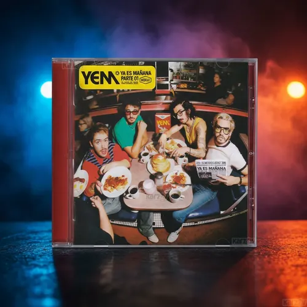
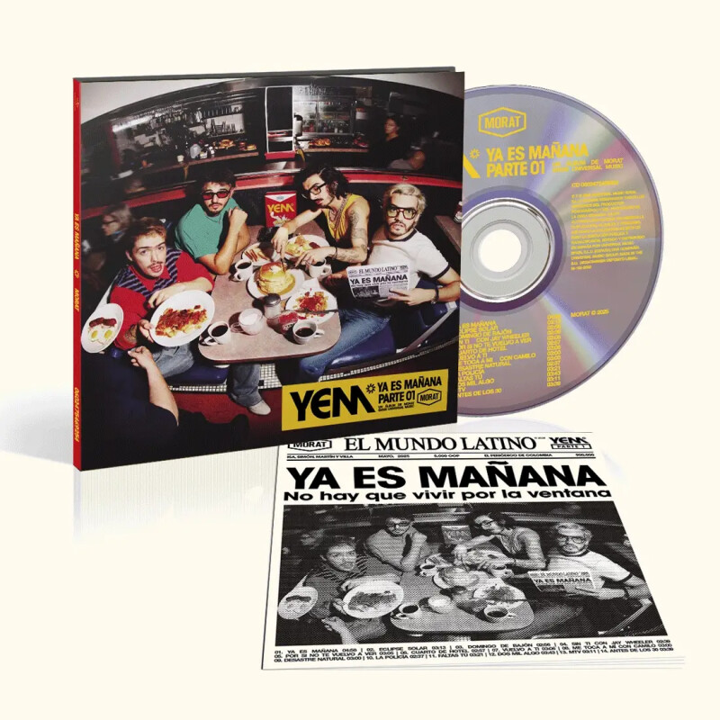

Descripción
“Ya Es Mañana” es el quinto álbum de estudio de Morat. Es un álbum que reúne canciones cargadas de emociones, experiencias amorosas y reflexiones sobre las distintas etapas de las relaciones. A través de sus letras, la banda combina el pop con sonidos característicos de su estilo, creando una propuesta cercana y nostálgica que habla sobre el amor, las despedidas, los recuerdos y la incertidumbre del futuro.
Jack Skellington es conocido como el "Pumpkin king" y es el líder de Halloween Town.Materiales
- cd de policarbonato con 14 canciones en total.
- 1 Minibook con la letra de las canciones.

Contexto
En este álbum, Morat, busca influencias de los años 90 consiguiendo una evolución. Edición Deluxe en formato CD Digipack con portada Lenticular.